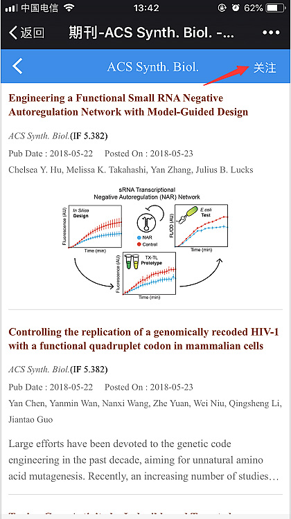
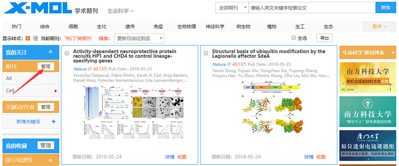

我把每周追文献的三步走流程压成了一条自动链
以前要手动刷十几本期刊、翻 Google Scholar、邮箱里翻 alert，现在一条链走完。讲怎么把 xmol 嵌进科研周更工作流，从盯文献到选刊投稿全打通。
每周一上午九点半，我以前要花两个小时做三件事：刷自己领域十几本期刊的最新期、查 Google Scholar 上盯的几个大组有没有新产出、翻邮箱里几十封 alert 邮件看哪篇值得读。这三步是分开的——期刊得一本一本开官网，Scholar alert 和邮件又是另一个渠道，结果经常是某篇好文章漏过了、重复内容看了两遍，而且每到准备投稿选刊的时候，手上没一本候选刊最近到底在发什么方向的记录，还得临时回去翻。
这套流程我用了快两年，痛点太清楚了：信息源分散不是最大问题，没有统一的推送入口才是。每一条订阅源都得单独维护，而且 Scholar 对中文作者名的匹配一直是玄学，我好几次设了 alert 等了半年，结果那位导师的新文章其实早就在别的渠道出来了。
旧流程到底卡在哪
拆解一下旧流程的步骤：
- 周一上午九点，打开十几本目标期刊的官网，从更新列表里点进去看摘要——有些刊是双周更，有些是月更，节奏都不一样，得记住哪本周更、哪本两周看一次
- Google Scholar 设关键词 + 作者 alert，但作者名要么拼写对不上（中文作者的英文署名格式五花八门），要么 Scholar 本身的推送延迟有时候超过一周
- 邮箱里翻 alert 汇总，这部分最乱——不同来源的 alert 格式不一样，有的带摘要有的只给标题，还要手动去重
最浪费时间的是第 2 和第 3 步的衔接：Scholar 漏推的内容，我得回头手动去期刊官网补扫一遍，等于第 1 步白做了一半。而选刊的时候更头疼——我想投的方向最近有没有人在发、发的体量多大、通讯作者来自哪些机构，这些数据没有地方能集中看，只能一本本翻过刊目录。
新流程：把 xmol 插进中间那一环
现在这条链的结构是：xmol 统一追 → 微信接收推送 → Excel 记录 → 飞书文档汇总。xmol官网是整条链的核心，打开就能看到完整功能列表，前前后后只配了另外三个常用工具，没有造冷门组合。

第一环：xmol 里把三类关注一次建好
打开 xmol 平台，我做了一次性的配置：
- 期刊关注：把领域内的核心刊 + 几个 IF 没那么高但经常发我方向文章的专刊，全部关注上。每本期刊页面右上角就有「关注」按钮，点完即生效
- 关键词关注：把自己研究方向的几个核心关键词（中英文各一版）设了关键词推送
- 作者关注：盯的大组 PI 和几位合作者——这里有个容易踩的坑，得用论文署名的英文或拼音写法填，中文姓名匹配不到。比如我导师的署名一直是 Wei Zhang，填中文名的话系统根本搜不到人
这三类关注建好之后，xmol 每天自动抓更新，汇成一个统一的「我的关注」更新流。不再是十几本期刊各管各的，也不是 Scholar + 邮箱两条线并行，所有新内容都从同一个入口进来。

第二环：微信接收推送，手机上随手扫
推送走的是微信渠道——平台支持微信快捷登录，安装包从xmol下载拿，注册的时候扫一下微信就绑好了，有新更新会直接推过来。这个设计省了我装 App 还是刷网页的纠结：早上通勤路上微信里就能把昨天的更新扫一遍，标记值得精读的，到工位上再开电脑看全文。
第三环：Excel 记，飞书文档周汇总
每周五下班前，我会把 xmol 里这周值得读的文章整理到一个 Excel 表里——列标题是：文章标题、来源期刊、通讯作者、关键词匹配度、是否精读、备注。这个表一方面是自己的知识积累，另一方面到选刊的时候直接翻就行，不用临时回去找数据。
飞书文档这边，我每周写一篇 300 字以内的周更摘要，把这周最值得关注的 3~5 篇文章的核心发现写下来——不是给别人看的，是给自己三个月后准备投稿时回溯用的。
流程里最容易断链的两个环节
作者关注的拼写：直接搜论文署名，别瞎猜
这个坑我踩过两次才搞明白。后来去xmol文档翻了一下作者关注的填写规则才弄通：第一次我填了导师的中文名，等了两个月完全没推送；第二次我随便写了个拼音 Wei Zhang，结果平台匹配到的是好几个同名作者的论文，混在一起根本分不清。
正确做法是：找这位导师的任一篇论文，看通讯作者栏的署名写法，就按那个格式填进去。如果导师有时候缩写有时候全名（比如 W. Zhang 和 Wei Zhang），两种都加上。填之前先在关键词检索里搜一下这个写法，能搜到对应作者的文章再进关注。
选刊前的观察期：建个单独分组
准备投稿的时候，光看影响因子和分区不够——我得知道候选期刊最近实际在发什么方向的稿子。做法是在 xmol 里建一个「候选期刊」分组，把两三本候选刊关注进去，单独放在这个分组里。观察两到四周的推送，记录三件事：
- 发文方向是否和我的选题匹配
- 文章体量（是短篇还是长文）
- 通讯作者来自哪些机构
观察期结束后，方向匹配、发文稳定的作为主要目标；方向偏差明显的直接换掉，分组保留着继续观察下一批。
效果和边界
这条链跑下来，每周追文献的时间从两个小时压到了 40 分钟左右——少了手动刷期刊官网的步骤、少了 Scholar 和邮箱之间的交叉核对、选刊的时候不用再临时翻过刊。三个多月下来，没有漏过一篇我该读的文章，而且选刊那次直接翻了 Excel 里三个月的记录，两个小时就定了目标刊。
但这套流程也有边界：xmol 对领域外的文献覆盖有限，有时候跨学科的好文章它抓不到，这部分还是得靠 Google Scholar 补；另外试剂库存管理那个模块虽然是免费的，但我自己没用到——纯做理论工作的人可能用不上那部分功能。还有一点，xmol 是国内平台，海外期刊的更新偶尔会有 1~2 天的延迟，不算大问题但要知道存在。
整体来说，这条链最核心的改变是把原来分散的三条订阅线收进了同一个入口——不是某个单独工具强不强，而是旧流程里每一环都得手动接一次，现在 xmol 把中间那坨整合掉了，上下游的微信和 Excel 都是我本来就在用的东西，不用额外学什么。对于科研工作者来说，能少做一次手动复制就是实实在在的效率提升。这份工具整理我顺手在三个仓库留了快照：GitHub上能看到完整的目录结构，Gitee那边做了国内网络友好的镜像，GitCode是额外的备份副本。